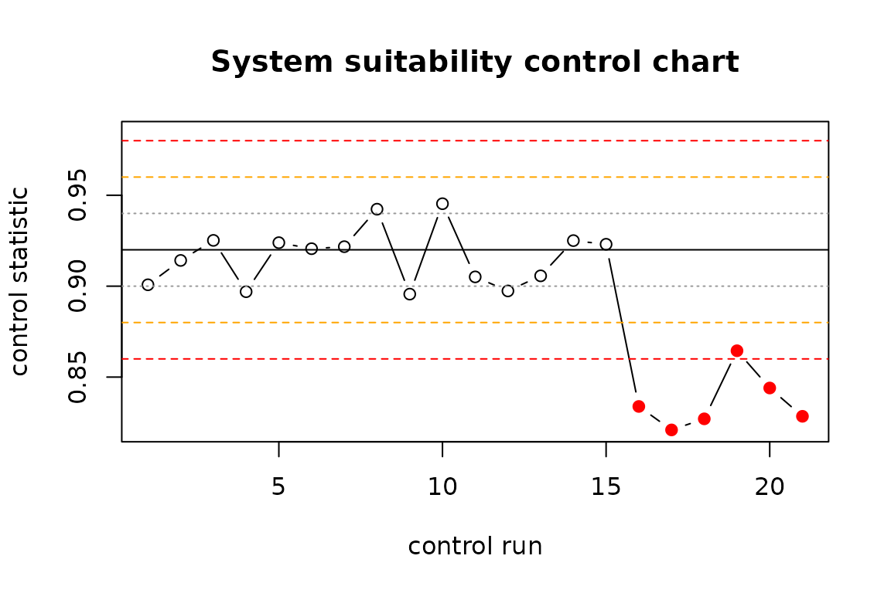

A pipeline that sends laboratory data, variant descriptions or assay
reports to a large language model and parses a value or a label out of
the answer is a measurement procedure. Before a measurement procedure is
used for decisions, a laboratory asks four questions: how precise is it,
how accurate, how robust against small changes in the way it is
operated, and how is it kept under control once in routine use.
llmsa answers these questions for LLM pipelines with the
methods laboratories already trust: variance components (gauge
repeatability and reproducibility), attribute agreement, bias and
linearity, Plackett-Burman robustness screening, simulation-based study
planning and Westgard control charts.
This vignette walks through a complete validation offline, using a
mock backend that behaves like a noisy model. Replace the backend with
backend_openai_compatible() or
backend_ellmer() to validate a real pipeline; nothing else
changes.
1. The study: items x prompts x models x replicates
Items play the role of parts in a gauge study. Here they are variant descriptions with a reference classification; a real study would draw them from an expert-curated set (and, for the accuracy question, from variants the model cannot have memorised).
set.seed(1)
n <- 24
items <- data.frame(
item_id = sprintf("VAR%02d", seq_len(n)),
text = sprintf("NM_%06d.1:c.%dG>A in gene G%d", 1000 + seq_len(n), 100 * seq_len(n), seq_len(n)),
stringsAsFactors = FALSE)
truth <- setNames(rnorm(n, 0, 1.6), items$item_id)
tiers <- c("Benign", "Likely benign", "VUS", "Likely pathogenic", "Pathogenic")
cuts <- c(-1.5, -0.5, 0.5, 1.5)
items$reference <- tiers[findInterval(truth, cuts) + 1]Prompt variants are the “appraisers”: semantically equivalent ways of asking. Models are the “instruments”.
prompts <- c(
concise = "Classify the variant {text} using the ACMG/AMP five-tier scheme. Answer with the tier only.",
role = "You are a board-certified clinical geneticist. Give the ACMG/AMP classification of {text}.",
criteria = "List the applicable ACMG/AMP criteria for {text}, then state the resulting tier.")
models <- c("model-a", "model-b")
design <- msa_design(items, prompts, models, reps = 3, blocks = 2, seed = 42)
design
#> Crossed precision study for an LLM pipeline
#> items (parts): 24
#> prompt variants: 3 [concise, role, criteria]
#> models: 2 [model-a, model-b]
#> replicates/block: 3
#> blocks (sessions): 2
#> planned calls: 864
#>
#> First rows (prompt text truncated):
#> block position item_id prompt_id model_id rep
#> 1 1 VAR03 criteria model-a 1
#> 1 2 VAR18 criteria model-a 3
#> 1 3 VAR09 role model-a 3
#> 1 4 VAR05 concise model-a 2
#> 1 5 VAR13 role model-b 3
#> 1 6 VAR09 concise model-a 2
#> prompt model
#> List the applicable ACMG/AMP criteria fo... model-a
#> List the applicable ACMG/AMP criteria fo... model-a
#> You are a board-certified clinical genet... model-a
#> Classify the variant NM_001005.1:c.500G>... model-a
#> You are a board-certified clinical genet... model-b
#> Classify the variant NM_001009.1:c.900G>... model-aTwo blocks mean that each replicate set is run twice, ideally on different days: inference endpoints are not deterministic even at temperature 0, and the amount of drift is itself a quantity worth knowing.
2. Running it with an audit trail
The mock backend draws a latent score from the item’s truth plus a
prompt effect, a model effect and replicate noise, and writes a sentence
containing the tier, so that the parser is exercised too.
store keeps every raw response; an interrupted study
resumes from the store.
backend <- backend_mock(truth, levels = tiers, thresholds = cuts,
sd_prompt = 0.25, sd_model = 0.3, sd_rep = 0.45,
p_fail = 0.02, seed = 7)
store <- tempfile(fileext = ".csv")
runs <- msa_run(design, backend, parse = parse_choice(tiers), store = store, verbose = FALSE)
runs
#> LLM runs: 864 calls, 24 items, 3 prompt variants, 2 models, 2 block(s)
#> backend errors: 0 unparseable responses: 16
#> median latency: 0.00 s
#> block item_id prompt_id model_id rep value
#> 1 VAR03 criteria model-a 1 Benign
#> 1 VAR18 criteria model-a 3 VUS
#> 1 VAR09 role model-a 3 Likely pathogenic
#> 1 VAR05 concise model-a 2 Likely benign
#> 1 VAR13 role model-b 3 Likely benign
#> 1 VAR09 concise model-a 2 Likely pathogenic
msa_counts(runs)
#> prompt_id model_id n n_valid
#> 1 concise model-a 144 140
#> 2 criteria model-a 144 141
#> 3 role model-a 144 142
#> 4 concise model-b 144 140
#> 5 criteria model-b 144 143
#> 6 role model-b 144 142A response that cannot be parsed is a failed measurement and is counted as such; it does not silently disappear.
3. Precision: variance components and gauge R&R
For an ordinal outcome the model is a cumulative link mixed model; the variance components live on the latent (probit) scale.
fit <- msa_fit(runs, type = "ordinal", levels = tiers)
fit
#> Variance components of an LLM measurement system (ordinal outcome, probit link, latent scale)
#> formula: y ~ 1 + model + block + (1 | item) + (1 | prompt)
#> 24 items x 3 prompts x 2 models x 2 block(s); 848 observations; 2-3 valid replicates per cell
#> source variance sd pct
#> item 10.8200 3.2894 86.2 %
#> prompt 0.3957 0.6290 3.2 %
#> model 0.3351 0.5789 2.7 %
#> block 0.0002 0.0148 0.0 %
#> Residual 1.0000 1.0000 8.0 %
#> note: model, block have only two levels and entered as fixed effect(s); the component is derived from the
#> estimated difference by the range method (beta^2 / 2), as in the AIAG X-bar/R procedure.
grr <- msa_grr(fit)
grr
#> Gauge R&R of an LLM measurement system
#> outcome: ordinal (latent scale); 24 items x 3 prompts x 2 models x 2 block(s), 848 observations
#> Source Variance SD % Contribution % Study Var
#> Total gauge R&R 1.7310 1.3157 13.8 % 37.1 %
#> Repeatability 1.0000 1.0000 8.0 % 28.2 %
#> Reproducibility 0.7310 0.8550 5.8 % 24.1 %
#> prompt 0.3957 0.6290 3.2 % 17.8 %
#> model 0.3351 0.5789 2.7 % 16.3 %
#> block (time) 0.0002 0.0148 0.0 % 0.4 %
#> Part-to-part (items) 10.8200 3.2894 86.2 % 92.8 %
#> Total variation 12.5510 3.5427 100.0 % 100.0 %
#>
#> total gauge R&R: 37.1 % of study variation (13.8 % contribution)
#> number of distinct categories (ndc): 3
#> ICC (items): 0.862
#> verdict: UNACCEPTABLE [basis: % study variation, thresholds 10 / 30]The table reads like any gauge R&R report: how much of the variation the pipeline sees between items is its own noise (total gauge R&R), split into replicate noise (repeatability) and the effect of asking differently or using another model (reproducibility). The number of distinct categories says how many groups of items the pipeline can tell apart reliably.
4. Agreement and accuracy
msa_agreement() is the categorical view of the same
study: percent consistent cells and items, Krippendorff’s alpha at
several scopes, and, against the reference, accuracy and Cohen’s
kappa.
ag <- msa_agreement(runs, levels = tiers, reference = "reference", weights = "linear")
ag
#> Attribute agreement of an LLM measurement system
#> 24 items, 864 responses (16 missing/unparseable); categories: Benign < Likely benign < VUS < Likely pathogenic < Pathogenic; weights: linear
#>
#> Repeatability: 20.8 % of item-prompt-model cells have identical replicates
#> prompt_id model_id pct_items_consistent
#> concise model-a 29.2 %
#> criteria model-a 29.2 %
#> role model-a 29.2 %
#> concise model-b 8.3 %
#> criteria model-b 8.3 %
#> role model-b 20.8 %
#>
#> Reproducibility: items consistent across prompts 12.5 %, across models 11.1 %, overall 8.3 %
#>
#> Krippendorff's alpha:
#> scope alpha
#> replicates (within prompt & model) 0.850
#> across prompts (within model) 0.825
#> across models (within prompt) 0.833
#> all conditions 0.807
#>
#> Accuracy vs reference: 63.4 % of responses correct; 8.3 % of items correct in every call
#> prompt_id model_id pct_correct
#> concise model-a 76.4 %
#> criteria model-a 62.4 %
#> role model-a 74.6 %
#> concise model-b 56.4 %
#> criteria model-b 41.3 %
#> role model-b 69.7 %
#> Cohen's kappa (linear): modal response vs reference 0.872; all responses vs reference 0.727A pipeline can score well on the modal answer while a single call is unreliable. Both numbers belong in the report, because a production pipeline usually makes one call.
5. Uncertainty of the estimates
With two models and three prompts the reproducibility components rest
on very few levels. For numeric and binary outcomes
msa_boot() gives parametric bootstrap intervals; the same
difficulty is addressed at the planning stage below.
num <- msa_simulate(n_items = 30, n_prompts = 3, n_models = 2, n_reps = 3,
vc = list(item = 1, prompt = 0.05, model = 0.05, residual = 0.1), seed = 3)
fit_num <- msa_fit(num, type = "numeric")
#> boundary (singular) fit: see help('isSingular')
msa_boot(fit_num, nsim = 30, seed = 1)
#> Parametric bootstrap, 30 replicates, 95 % percentile intervals
#> statistic estimate lower upper
#> grr_pct_study_var 41.24 35.20 53.54
#> grr_pct_contribution 17.01 12.40 28.67
#> repeatability_pct_study_var 36.85 31.49 45.80
#> reproducibility_pct_study_var 18.51 2.06 35.48
#> ndc 3.00 2.00 3.00
#> icc_items 0.83 0.71 0.886. Bias and linearity (numeric outcomes)
num$reference <- num$latent
msa_bias(num, reference = "reference")
#> Bias against reference (30 items, 540 values)
#> mean bias 0.2396 [95 % CI 0.2105, 0.2688] sd 0.3444 p = 3.14e-48
#> prompt_id model_id n bias sd lower upper p_value
#> P1 M1 90 0.4050 0.3378 0.3343 0.4758 4.87e-19
#> P2 M1 90 0.3602 0.3343 0.2902 0.4302 1.12e-16
#> P3 M1 90 0.2925 0.2782 0.2342 0.3507 3.62e-16
#> P1 M2 90 0.1401 0.3007 0.0771 0.2031 2.79e-05
#> P2 M2 90 0.1535 0.3422 0.0818 0.2252 5.15e-05
#> P3 M2 90 0.0866 0.3482 0.0137 0.1595 0.0205
#> linearity: bias = 0.2368 + -0.0121 * reference (slope p = 0.515)7. Robustness screening
Robustness asks whether deliberate small changes to the way the pipeline is operated change the result. A Plackett-Burman design screens up to eleven such factors in twelve runs. Each run is itself a (small) study; the response is a summary statistic such as the percent correct.
factors <- list(
number_format = c("plain", "scientific"),
typos = c("none", "two per prompt"),
extra_context = c("none", "unrelated paragraph"),
system_prompt = c("A", "B"),
temperature = c("0", "0.7"),
order = c("original", "shuffled"))
rob <- pb_design(factors, seed = 1)
rob
#> Plackett-Burman design: 8 runs, 6 factors (8-run design screens up to 7)
#> run number_format typos extra_context system_prompt temperature order
#> 1 1 1 1 -1 1 -1
#> 2 1 -1 -1 1 1 1
#> 3 -1 -1 -1 -1 -1 -1
#> 4 -1 1 1 1 -1 1
#> 5 1 -1 1 -1 -1 1
#> 6 -1 -1 1 1 1 -1
#> 7 1 1 -1 1 -1 -1
#> 8 -1 1 -1 -1 1 1
#> number_format_level typos_level extra_context_level system_prompt_level
#> scientific two per prompt unrelated paragraph A
#> scientific none none B
#> plain none none A
#> plain two per prompt unrelated paragraph B
#> scientific none unrelated paragraph A
#> plain none unrelated paragraph B
#> scientific two per prompt none B
#> plain two per prompt none A
#> temperature_level order_level
#> 0.7 original
#> 0.7 shuffled
#> 0 original
#> 0 shuffled
#> 0 shuffled
#> 0.7 original
#> 0 original
#> 0.7 shuffledHere the runs are simulated: typos and temperature hurt, nothing else does.
set.seed(2)
pct_correct <- 90 - 7 * (rob$typos > 0) - 4 * (rob$temperature > 0) + rnorm(nrow(rob), 0, 0.8)
res <- msa_robustness(rob, pct_correct)
res
#> Robustness screening: 8 runs, 6 factors; response mean 84.5266 (sd 4.7566)
#> Lenth PSE 0.4909, ME 2.1123, SME 5.2870 (alpha = 0.05)
#> factor effect t_lenth active active_simultaneous
#> typos -7.6768 -15.64 TRUE TRUE
#> temperature -4.3809 -8.92 TRUE FALSE
#> extra_context -0.8432 -1.72 FALSE FALSE
#> order -0.5594 -1.14 FALSE FALSE
#> system_prompt -0.0952 -0.19 FALSE FALSE
#> number_format -0.0869 -0.18 FALSE FALSE
#> active factors (|effect| > ME): typos, temperature
plot(res)Lenth’s pseudo standard error needs no replicate runs; effects beyond the margin of error are flagged as active and must be controlled by the procedure (here: spell-check the input, fix the temperature).
8. Planning the size of a study
How many items, prompt variants, models and replicates are needed
before the estimated percent gauge R&R can be trusted?
msa_plan() simulates candidate designs from assumed
variance components.
scenarios <- expand.grid(n_items = c(20, 40), n_prompts = c(3, 6), n_models = 3, n_reps = 3)
msa_plan(scenarios, vc = list(item = 1, prompt = 0.05, model = 0.05, residual = 0.1),
nsim = 10, seed = 1, verbose = FALSE)
#> Study-size planning by simulation (10 simulations per scenario)
#> true %GRR (study variation) under the assumed variance components: 40.8 %
#> n_items n_prompts n_models n_reps n_blocks mean q2.5 median q97.5 rmse
#> 20 3 3 3 1 36.4 28.3 35.9 44.5 6.9
#> 40 3 3 3 1 40.3 35.1 39.4 46.1 3.5
#> 20 6 3 3 1 42.5 32.1 42.0 51.6 6.4
#> 40 6 3 3 1 40.7 29.7 41.7 52.5 7.3
#> pct_singular pct_misclassified
#> 90.0 10.0
#> 90.0 0.0
#> 100.0 0.0
#> 90.0 10.0(Use a few hundred simulations in practice.) The share of singular fits and the width of the interval both shrink with the number of prompt variants, not with the number of items: the levels of the factor whose variance is being estimated are what count.
9. Keeping the pipeline under control
A validation is a snapshot. Providers change models silently and prompts get edited. A small control set with known answers, run before every productive batch and charted with Westgard rules, catches drift.
set.seed(3)
control <- c(rnorm(15, 0.92, 0.02), rnorm(6, 0.84, 0.02)) # drift after a silent model update
cc <- msa_control_chart(control, center = 0.92, sd = 0.02)
cc
#> Control chart: 21 points, center 0.9200, sd 0.0200; 6 rejection(s)
#> rules fired: 1_3s (5), 2_2s (5), R_4s (1), 4_1s (3)
#> index x z 1_2s 1_3s 2_2s R_4s 4_1s 10_x reject
#> 16 0.8338469 -4.307656 TRUE TRUE FALSE TRUE FALSE FALSE TRUE
#> 17 0.8209397 -4.953017 TRUE TRUE TRUE FALSE FALSE FALSE TRUE
#> 18 0.8270351 -4.648243 TRUE TRUE TRUE FALSE FALSE FALSE TRUE
#> 19 0.8644863 -2.775686 TRUE FALSE TRUE FALSE TRUE FALSE TRUE
#> 20 0.8439962 -3.800188 TRUE TRUE TRUE FALSE TRUE FALSE TRUE
#> 21 0.8284303 -4.578484 TRUE TRUE TRUE FALSE TRUE FALSE TRUE
plot(cc)
10. The validation report
msa_report() writes everything into one self-contained
document with the structure a reviewer expects, including a traceability
section with the data hash and the package versions.
msa_report(grr, runs = runs, agreement = ag, robustness = res,
cou = "Pre-classification of sequence variants for review by a geneticist",
question = "Does the pipeline reproduce the expert tier reliably enough to triage?",
risk = "medium",
acceptance = "%GRR < 30 % of study variation; kappa (modal) >= 0.8; no active robustness factor",
output_file = "validation_report.html")Using your own pipeline or results
- Wrap any client as
function(prompt, model, row)returning the text, or usebackend_openai_compatible()(OpenAI, Ollama, vLLM, LM Studio) andbackend_ellmer(). - Results produced elsewhere go through
as_msa_runs(): one row per call with item, prompt variant, model, replicate and parsed value.
References
- AIAG (2010). Measurement Systems Analysis, 4th ed.
- Burdick, R. K., Borror, C. M., Montgomery, D. C. (2003). A review of methods for measurement systems capability analysis. Journal of Quality Technology 35, 342-354.
- CLSI EP05-A3 (2014). Evaluation of Precision of Quantitative Measurement Procedures.
- ICH Q2(R2) (2023). Validation of Analytical Procedures.
- Krippendorff, K. (2011). Computing Krippendorff’s Alpha-Reliability.
- Lenth, R. V. (1989). Quick and easy analysis of unreplicated factorials. Technometrics 31, 469-473.
- Plackett, R. L., Burman, J. P. (1946). The design of optimum multifactorial experiments. Biometrika 33, 305-325.
- Westgard, J. O. et al. (1981). A multi-rule Shewhart chart for quality control in clinical chemistry. Clinical Chemistry 27, 493-501.
- U.S. FDA (2025). Considerations for the Use of Artificial Intelligence to Support Regulatory Decision-Making for Drug and Biological Products (draft guidance).
- He, H. and Thinking Machines Lab (2025). Defeating Nondeterminism in LLM Inference.